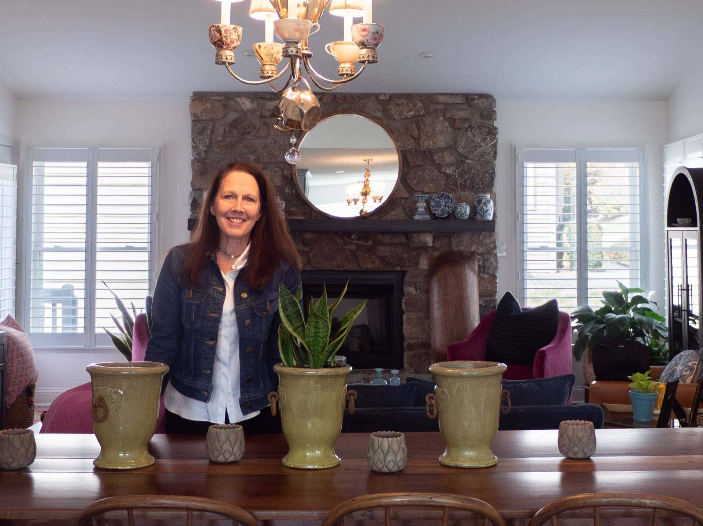
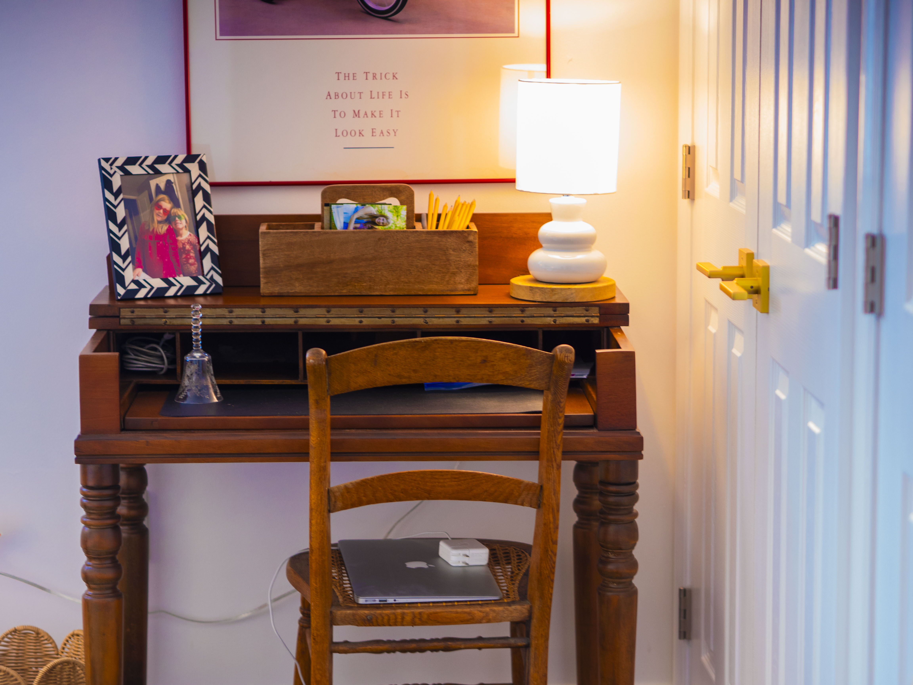

Kim Pierce paid $387,000 in cash for the east Asheville townhome she moved into on Monday, Sept. 23, 2024. A divorced mother of six, the 57-year-old moved to the River Knoll community to downsize, slow down from work and spend more time with her grandchildren.
But she only slept four nights in that house. Tropical Storm Helene hit on Friday, flooding Pierce's new home and destroying most of her possessions along with it. A year and a half later, she's finally settled into another townhome, this time in east Asheville's Hawthorne Villages complex about four miles west of River Knoll. She moved there in June 2025.
“It's still surreal,” she said of the experience. “I mean, I couldn't wrap my brain around the loss of everything.”
Pierce is one of thousands who lost their house to Helene. According to estimates from FEMA, which were cited in Buncombe County's 2025 housing needs assessment, approximately 19,951 homes were damaged by the storm, and more than 1,400 were wrecked to the point of needing replacement.
But even eighteen months later, many Western North Carolina residents are still not back to normal. Post-disaster housing recovery was always going to be slow, but it has faced additional delays due to federal funding chaos amid a new administration. The result is mounting frustration by a population already exhausted from the toll rebuilding takes on everything from bank accounts to mental health.
President Trump taking office four months after the storm “caused things to look different than what people who have done this for a long time told us to expect,” said Rachael Sawyer, the strategic partnerships director at Buncombe County and a former Helene recovery coordinator. Though Sawyer's recovery work has been more administrative than political, she said that local and county government leaders have often had “to advocate to get things unstuck when they got stuck.”
Pierce knows this reality all too well. “I used to be a little bit able to tell my story without crying so much,” she said on a recent warm day in early spring.
She is still waiting for FEMA to start the process of buying out her lost home. But “it wiped me out more than anything I've ever been through [and] I get frustrated that it's taken so long,” she said. “I also am trying to be realistic and understanding that I'm not the only person that's in this situation.”

Kim Pierce stands in front of a dining room table she was able to salvage from her flood-ravaged home. Photo credit: Claire Ogden

Pierce's grandmother's desk is one of three pieces of furniture she was able to salvage from the wreckage. Photo credit: Claire Ogden
For the first several weeks after Helene, government efforts were focused on disaster response, trying to make sure everyone had access to the essentials. This included temporary housing support from FEMA. At its peak in October 2024, FEMA's Transitional Sheltering Assistance program was helping 5,284 households access temporary housing, according to the Buncombe County Helene Recovery Plan. That meant funding for things like temporary stays in hotels or trailers, help with rent and home repair. Since then, transitional housing support had been at risk of expiring in spring 2025 and again on April 11 of this year. Most recently, on March 16, FEMA announced a six-month extension for temporary housing and rental assistance.
Even amid emergency operations, local governments were already preparing for recovery. In January 2025, over $1.4 billion was allocated by HUD to North Carolina through the Community Development Block Grant Disaster Recovery (CDBG-DR) program. Asheville falls under the program's “entitlement” jurisdiction, which means the city received an additional $225 million in CDBG-DR funds directly from the federal government. Asheville is putting $31 million, or 13% of those funds, toward housing recovery.
But support from churches and nonprofits has outpaced that from governments. Samaritan's Purse, a Christian nonprofit headquartered in Boone, has replaced over 140 mobile homes, built 26 new homes and completed over 100 major home repairs — all at no cost to the recipients. In April, they also announced an expansion of their rebuilding program, adding 19 new locations in four different states.
Jack Bailey, a 60-year-old cook at Asheville's downtown branch of Hotel Indigo, is one of many who has community organizations to thank for both his transitional housing and his new home. Early that Friday morning before Helene hit Asheville, Bailey left his Black Mountain home for work — not knowing he'd become homeless that day — then spent over a month living at the hotel and cooking for disaster response staff staying there. Meanwhile, his wife and 15-year-old son stayed with the wife's sister in Atlanta, coming up only occasionally for visits.
By the time Bailey finally went back home, mold had infested the building after several weeks of no power. The house was condemned. Luckily, a local church gifted Bailey's family a trailer, where they spent Christmas 2024 parked next to the old home. They lived in that trailer for over a year until they had a new house to move into the following December.
Despite losing his house, Bailey still owed $59,000 on the old mortgage. “Do you know anybody on this planet that would go and spend $59,000 to pay off a house that's condemned?” he said. “That's what we had to do.” He and his wife paid off the old mortgage on their 17th anniversary.
Though he cited frustrations with FEMA, Bailey did get some money from the agency, though he's lost track of exactly how much. Yet it was community donations that helped him afford the new house. The nonprofit BeLoved Asheville gave Bailey a check for $48,000, and on June 3, 2025, Samaritan's Purse gave him $134,575. Bailey is one of many WNC residents who have churches to thank for their new or repaired home.

Jack Bailey poses with a tree that was damaged by the storm but lives on. Photo credit: Claire Ogden
Bailey's new house sits in the same spot as the old one, and it looks like the old house, too. It was prefabricated by Clayton Homes, a subsidiary of Berkshire Hathaway. It's not perfect; walking around the new place, Bailey pointed to several areas where vinyl trim was improperly installed, exposing the nails it was meant to cover. And it has less storage than their old place.
“There's not a lot of room like we're used to,” Bailey said. “But still, we're still not going to complain, because the house prices out here have gone up anyway.”
He looks around at his living room, which is filled with quirky furniture and knick-knacks, bought mostly from Habitat for Humanity. There's a bright fuschia couch and a carpet with a unicorn on it. “She picked it all out,” he said of his wife.

Bailey is one of the lucky ones. As of late January this year, Blue Ridge Public Radio reported that hundreds of people displaced from Helene were still living in RVs. And while it's difficult to measure exactly how Helene has affected the area's homelessness crisis, the city of Asheville's 2025 point-in-time count showed a 50% increase in the number of unsheltered people — or people living in tents, cars and the like — from March 2024 to March 2025.
While many are still displaced, local governments have moved on to recovery. By June 2025, Buncombe County had mostly transitioned away from emergency services, closing their emergency operations center on June 4.
By October 2025, the county hired Kevin Madsen, its first full-time recovery staffer. Madsen now manages a dedicated recovery team of three other employees. Their job is to manage progress on the county's recovery plan, which consists of 114 projects divided among seven local governments that opted into and contributed to the plan.
The major housing programs at play, including single-family home repair through RenewNC and home buyouts through the Hazard Mitigation Grant Program, are federally funded but managed at the state and/or county level. Notably, federal housing recovery dollars are mostly for homeowners. Although the North Carolina legislature allocated $1 million in rental assistance and Asheville has beefed up that number using its CDBG-DR funding, it has still not met the need for an area that was already in a housing crisis pre-Helene.
Amid confusion over federal funding, local governments have tried to help constituents navigate the chaos. “We've tried to go above and beyond” what the federal government provided, said Sawyer. The county established a Helene Resource Center, where county officials were available to “be a liaison so they don't have to go through all the alphabet soup” of various funding programs, she said. As of early March, though, the resource center is only open by appointment. Sawyer said Buncombe County was “thankful” the state was able to manage the hazard mitigation program, given the high volume of applications.
Likewise, Madsen said that although applications for the major housing rebuilding programs have closed, the Buncombe County Long-Term Recovery Group, of which the national nonprofit United Way is the fiscal agent, is still doing intakes for recovery case management.
For Nadja Simon, a personal trainer who lost her house in Swannanoa, the alphabet soup of public funding has been almost entirely fruitless. Ten miles east of Asheville and tucked away in a green house on a mountain, Simon always felt safe in the privacy offered by her Swannanoa alcove. But Helene changed that.

Nadja Simon points to the hill where a landslide came down during Helene, destroying her house's foundation. Photo credit: Ali Caudle
Though the media had dubbed the area a “climate haven,” the mountains actually played a part in bringing heavy rainfall to greater Asheville through a combination of atmospheric and geographic factors. In a process called orographic lift, mountains forced the air to rise, cool, condense and form clouds. The area had already been inundated with rainstorms in the days before Helene even came, which destabilized slope structures and created the perfect conditions for landslides. Simon's house fell victim to one of the more than 4,000 landslides that hit the area during Helene, killing at least 23 people and damaging over 245 homes in Buncombe County alone.
Several trees fell down next to Simon's house, while two separate landslides sent a mess of tree stumps and debris barreling toward the building. Mercifully, it stopped right next to the house but didn't enter.
Simon had just gotten a new sliding glass door, which she thinks saved her life. “It's a miracle it didn't come inside the house,” she said.
“My phone was going off, like, 'get to higher ground,'” she said. “But we are on higher ground.”

Landslides destroyed the foundation of Nadja Simon's house, making the parcel of land it sits on unlivable. Photo credit: Ali Caudle
Standing at that sliding glass door, Simon, 58, looked out at the mass of tree stumps and debris that still sit right outside the window, 18 months later. She hasn't lived there for over a year, but she's still paying about $200 a month on an electric bill to prevent mold growth. She was able to get a forbearance on her mortgage for a year, but she recently started paying that again at $750 a month. That's on top of the $1,200 in monthly rent for her new apartment in south Asheville.
Since the storm, Simon has applied to every form of government relief she could find, like FEMA's individual assistance program and the several opportunities available for homeowners, including Renew NC and the Hazard Mitigation Grant Program. The former helps rebuild and replace single family housing, while the latter is FEMA-funded and gives property owners the option to rebuild with future disaster preparedness in mind, or to have their property bought out by the government.
Simon said that Renew NC came out and inspected her property in fall 2025, but that she hasn't heard anything from them since. She also has yet to hear back from the Hazard Mitigation Grant Program. “The frustration of not hearing anything and not knowing what's happening gets kind of wearing,” she said.
At first, FEMA sent Simon a letter denying her application for individual assistance, since they had incorrectly determined her house was still livable. “I lost my shit,” she said. “I cried on the phone and they apologized.” Simon eventually got $42,000 from FEMA for the damages, but “It's been a lot of back and forth with them,” she said.
In the meantime, she has had to handle much of the cost of her former house, plus costs for renting a new apartment. “I don't get to walk away from that,” she said.

Though Simon's house still looks intact, she said the landslides “carved out a whole new path” for water on the slope she lives on — meaning any future storms would just go straight through her house's current foundation. “There's no repairing this house,” she said. “There's no fixing this mountain.”
Simon pointed to the underbelly of the house, where several bricks have fallen away from the foundation. “The whole thing is sitting on chocolate pudding, essentially,” Simon said. “So this could all just go.”

More than 18 months later, downed trees still surround Nadja Simon's house. No volunteer organization has had the capacity or equipment to clear the area. Photo credit: Ali Caudle
Though government support has been slow to arrive, Simon has gotten a lot of help from friends and family, her synagogue and even strangers. A colleague created a GoFundMe that raised over $13,000 for her, and she did get $31,000 from her synagogue, Temple Beth HaTephila. She also got around $42,000 from FEMA for repair, storage and some rental assistance. Simon credits Pisgah Legal Services with helping her put in the work required to get the FEMA funds.
Despite the challenges, Simon has no intention of leaving the area. “My business is here,” Simon said. “I'm rooted here. I love it here.”
Simon has taken refuge in her community as well as her job at Allon Health and Wellness, a personal training studio that she founded and owns and operates in North Asheville. Though she lost the house, her gym was luckily untouched.
“I've been through some things,” Simon said, “and you know, you just put one foot in front of the other. You just keep going, right?”
While Simon has yet to hear back about the Hazard Mitigation Grant, Pierce was recently told that her application passed at the county level, and will go to the state and then FEMA next.
On the evening of March 4, North Carolina's Emergency Management division and Buncombe County government hosted a kickoff meeting for owners of the 47 properties that were recently approved to be acquired by the county through the program. Those property owners are in the first of three groups; letters of intent were due on Oct. 31.
At that March meeting, property owners met the contracted vendor who will help them through the entire acquisitions process, which could take several years. In that process, they'll get the property value surveyed and appraised; then, the owners will be given an offer for purchase and negotiations can begin. Upon acceptance, the property will be closed and the contractors will manage the process by which the property will eventually be returned to the local government and remain green space in perpetuity.
Pierce is in group two of the HMGP, so she said it could be eight to nine months or more before her official kickoff even takes place. She's under no illusions that the HMGP will cover the full extent of her need, but her hope is that she can at least pay her mortgage off.
“Do I get frustrated that it's taking so long?” Pierce said. Yes, but she knows “there are far worse people off. I've tried to be thankful for what I do have.”

According to Sawyer, “Disasters are generally not political,” she said, “because everyone in a place is impacted.” Even so, recovery procedures have frequently collided with politics post-Helene.
“FEMA already has, when they're following regular process,” she said, “so many steps that it snakes down the page.” That means political effects — like the funding delays that a report by Senate Democrats attributed to former Department of Homeland Security secretary Kristi Noem's extra scrutiny of FEMA funding — can delay an already arduous process.
For the Hazard Mitigation program, the properties the county acquires “are going to be a great opportunity, but also a burden to be managed,” Sawyer said. “None of that will be easy.”
Housing recovery has fallen prey to several political stoppages and confusion over funding timelines. Shortly after the hazard mitigation kickoff meeting, the secretary rejected Buncombe County's recovery plan, citing DEI as the reason. Transitional housing support — another FEMA-funded program — was supposed to end in March 2026, but FEMA announced a six-month extension two weeks before its expiration.
While long-term recovery efforts continue — with all their fits and starts — regular people are still rebuilding, every day. That work doesn't get to wait.
Over in east Asheville, Pierce reflected on her own journey. A little while ago, a team of volunteers at Baptist on Mission came to her house in River Knoll to help get all her belongings out of the house and assess the structural integrity of the building. “We had to get it down to the studs,” she said, “to see if structurally it had been compromised.”
It turned out that the engineer who came to survey the damaged house was actually the same person who had inspected it when Pierce was about to buy it pre-Helene; he had seen what it looked like before and after. “He walked in my garage and started crying,” Pierce said. “There's just no words, the amount of mud, the amount of dirt, the amount of moisture” that was on everything.


Mud covered many of the houses that were condemned after the flooding, making homes like Pierce's, Bailey's and Smith's unrecoverable. In these photos, taken in an abandoned home in Swannanoa 18 months after the storm, a sink full of dried mud and a wrecked bedroom illustrate the kind of damage residents experienced. Photo credit: Sydney Woogerd
Pierce didn't want to get her hopes up, but her mother kept saying she thought some of Pierce's belongings could be salvaged. It turned out that was true. After a long time spent washing and money spent restoring some belongings, Pierce was able to save a bunch of plates and teacups, as well as three pieces of old furniture — all family heirlooms.
The most meaningful one for Pierce was a chandelier made from her grandmother's set of teacups that her mother made as a Christmas present about 20 years ago. Each individual cup had to be washed, and Pierce's mother had to get the chandelier totally redone, a process that cost $700. It now sits over her dining room table, just like it did in River Knoll.
When Pierce looks at that chandelier — and thinks about all she went through to get it back — she sees the hand of God. “It's totally grace,” she said. “It doesn't feel earned or deserved, and it's a beautiful picture of people loving other people.”
With the help of her mother, Kim Pierce was able to salvage this treasured chandelier, made with her grandmother's teacups, from the mud that covered the inside of her house. Photo credit: Claire Ogden